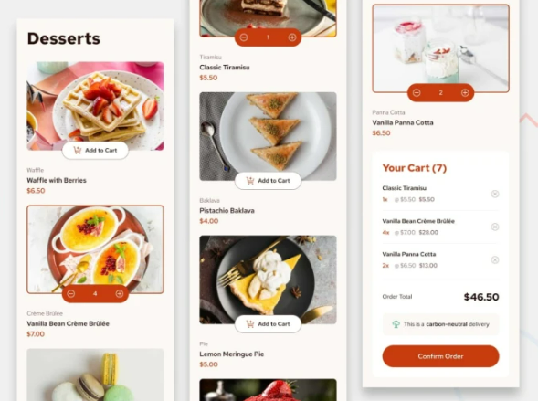

Product List With Cart
Esta página contém o estudo de caso do Projeto de Código Aberto Product List With Cart, que inclui a Visão Geral do Projeto, as Ferramentas Utilizadas e os Links Ativos para o produto oficial.
Link Projeto
Visão Geral do Projeto
Este projeto foi desenvolvido como parte de um desafio do site Frontend Mentor, com foco na construção de uma interface de e-commerce para sobremesas. A proposta incluía apenas o design como referência, e todas as funcionalidades foram implementadas do zero.
Principais funcionalidades implementadas
- Exibição dinâmica de produtos com imagem, nome e preço;
- Botão "Add to Cart" funcional para cada item;
- Atualização em tempo real da quantidade de itens no carrinho;
- Visualização do carrinho com os itens selecionados e total;
- Layout responsivo, adaptando-se bem a diferentes tamanhos de tela.
Ferramentas Utilizadas
- HTML
- CSS
- JavaScript
- GIT
- Github